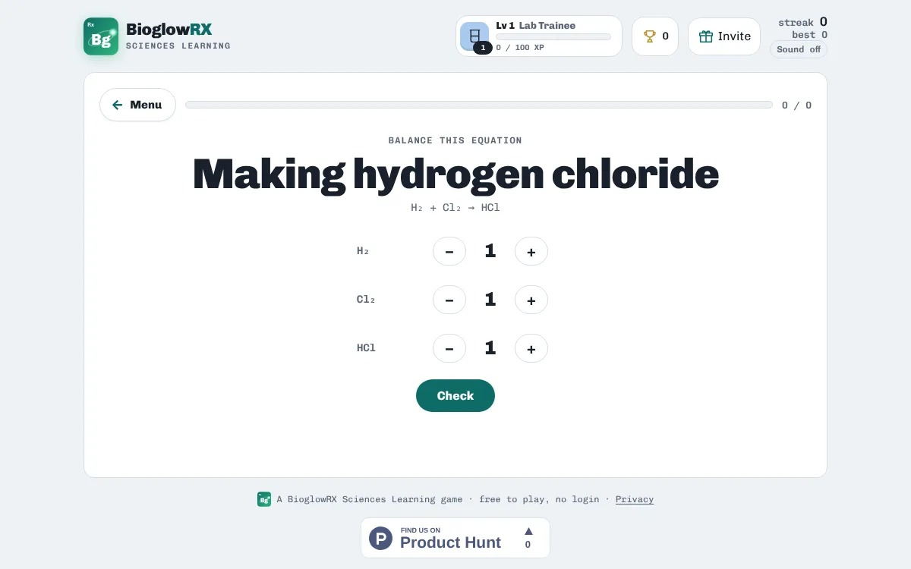

Chemistry · free · no login
Balancing chemical equations practice

Atoms are never created or destroyed in a reaction, so both sides of an equation need the same number of each kind of atom. You balance it by changing only the coefficients, the big numbers in front of each formula.

In Balance It you set each coefficient with + and − buttons and check your answer. The game also asks you to name the reaction type and includes a mole calculator with worked answers.
A taste of what's inside
| Unbalanced | Balanced |
|---|---|
| H₂ + Cl₂ → HCl | H₂ + Cl₂ → 2HCl |
| N₂ + H₂ → NH₃ | N₂ + 3H₂ → 2NH₃ |
| Na + Cl₂ → NaCl | 2Na + Cl₂ → 2NaCl |
| Al + Cl₂ → AlCl₃ | 2Al + 3Cl₂ → 2AlCl₃ |
| H₂O₂ → H₂O + O₂ | 2H₂O₂ → 2H₂O + O₂ |
| KClO₃ → KCl + O₂ | 2KClO₃ → 2KCl + 3O₂ |
| NaHCO₃ → Na₂CO₃ + H₂O + CO₂ | 2NaHCO₃ → Na₂CO₃ + H₂O + CO₂ |
| NaN₃ → Na + N₂ | 2NaN₃ → 2Na + 3N₂ |
Ways to practise
- Study notes · Read the key ideas first: everything the games ask is in here.
- Explore the reactions · Each equation, balanced, with its type and where you meet it.
- Balance the equation · Set the coefficient in front of every formula.
- Which reaction type? · Read the equation, name the pattern.
- Where do you meet it? · See the balanced equation, pick where it happens.
- Match Pairs · Pair each reaction with its balanced equation.
- Mole calculator · n = m ÷ M, grams ↔ moles and mole ratios, with a helper.
- Mole challenge · 10 mixed mole questions, no formula, no helper.
How to study with it
- Read the Study notes on balancing and reaction types.
- Play Balance the equation until each one feels quick.
- Then try Which reaction type? and the Mole calculator.
Questions
Can I change the small numbers in a formula?
No. Subscripts are part of the formula; changing them makes a different substance. Only change the coefficients.
Is it free?
Yes. Everything is free, with no ads and nothing to buy.
Do I need an account?
No. There is no login. Your scores, streaks and certificates are saved on your device.
Does it work on a phone?
Yes. It works in any modern browser on phones, tablets, Chromebooks and computers.
More free practice
 ChemistryPeriodic table gameNames, symbols, families and where each element sitsPlay free
ChemistryPeriodic table gameNames, symbols, families and where each element sitsPlay free  ChemistryVirtual titration labPour, swirl and stop at the pink endpointPlay free
ChemistryVirtual titration labPour, swirl and stop at the pink endpointPlay free  PharmacologyFree dosage calculation practiceTablets, liquids, mg/kg and IV rates with worked answersPlay free
PharmacologyFree dosage calculation practiceTablets, liquids, mg/kg and IV rates with worked answersPlay free BioglowRX Sciences Learning turns university science textbooks into free games, chapter by chapter: chemistry, anatomy & physiology, pharmacology, nutrition, and health & wellness. See all subjects.